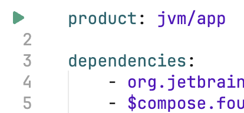

The technology
Poké-Fun is implemented using Kotlin, Arrow, and Compose Multiplatform. The latter has been chosen because it provides the same concepts to build user interfaces in a variety of platforms. In particular, we can write a desktop application that runs easily everywhere (the perks of using the JVM 😉).
The one choice which goes out of the ordinary is using Amper as build tool, instead of Gradle, much better-known among Kotliners. Feel free to look at the module.yaml file, but for the tasks you won't need to touch it. To start the application you can run ./amper run in a command line. The first time it may take some time to start, since build tools, compiler, and dependencies need to be set up.
We recommend using Fleet or IntelliJ IDEA to work on Poké-Fun. If you use the latter, you need the corresponding Amper plug-in. In both cases, you should see a small play button to run the application from the IDE.

Compose Multiplatform
In the recent years we have seen an explosion of a new paradigm for UI development, based on managing the state separately from the view, which is then defined as a function which is re-executed everytime the state changes. Some well-known frameworks include React for web, SwiftUI for iOS, and Jetpack Compose for Android. Compose Multiplatform uses the same concepts of the latter, but targeting several platforms (at the time of writing: desktop, Android, iOS, and web via WebAssembly).
There is still not much documentation about Compose Multiplatform, but most of the information about Jetpack Compose (for Android) applies only with minor modifications.
- Android Basics with Compose,
- Jetpack Compose guides from Google,
- Create a Compose Multiplarform app,
- Philipp Lackner has videos covering Compose Multiplarform.
Compose applications are typically built from two components:
- View models keep (part of) the state of the application, and communicate with the outside world.
- Views define how this state is mapped into a set of UI elements laid out in the screen. Views as defined by
@Composablefunctions.
Let us look at the simplest application: a button which counts how many times it has been pressed. The state is basically a counter.
class Counter: ViewModel() {
// 1. define a state, starting with 0
private val _count = mutableStateOf(0)
// 2. expose the state in a read-only manner
val count: Int = _count.value
// 3. operations to change the state
fun increment() {
_count.value++
}
}
The view consumes this view model, and shows a button with a text indicating the amount of times it has been clicked.
@Composable fun Screen(counter: Counter) {
Button(onClick = { counter.increment() }) {
Text("Clicked ${counter.count} times")
}
}
What happens when the button is pressed? Then the onClick lambda is executed, which eventually changes the value of _count. Compose detects this change and recomposes the UI, that is, re-executes Screen and applies any update to the visible screen. The @Composable annotation is the magic that makes this link work.
Armed with this knowledge, you can read the introduction to Poké-Fun.